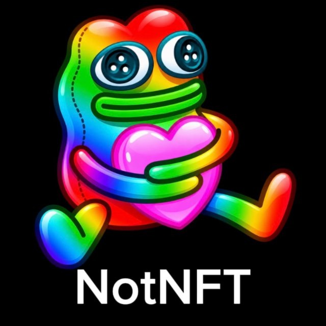

NotNFT
v2.5Локальные подарки, NFT и баланс.
У канала NotNFT изменился только адрес. @realnotnft

Локальные подарки, NFT и баланс.
WebSocket-прокси для Telegram.
Откройте скачанный файл через «Поделиться → Whitegram» или раздел «Настройки → Плагины».
Меню: .notnft или .notrkn. Для NotРКН нужен встроенный Python 3.11.
Загрузка…
В архивных сборках NotNFT может встречаться старый адрес канала.